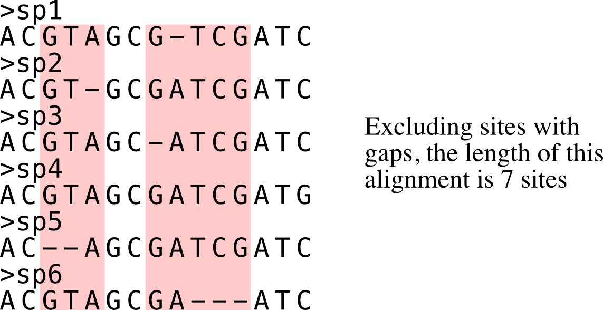
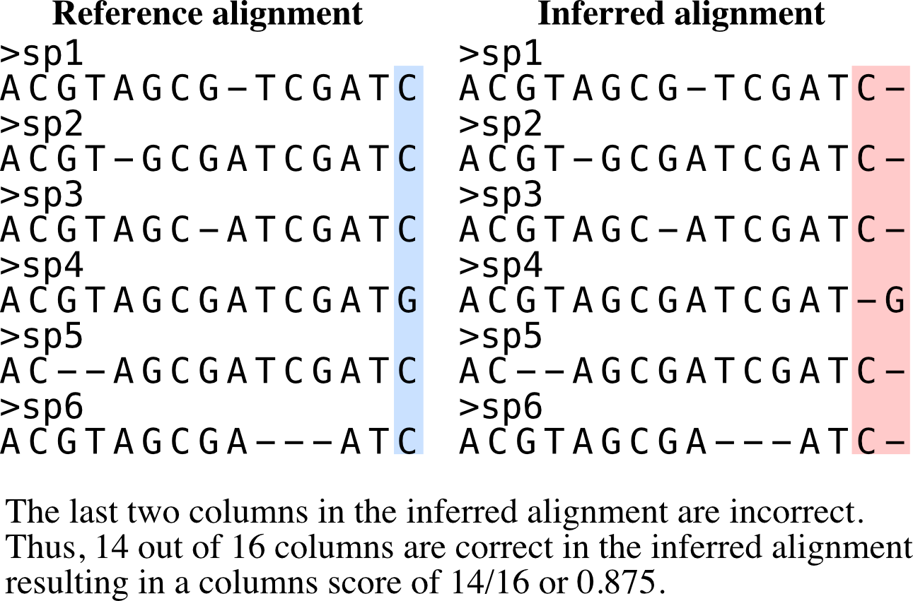

Usage
PhyKIT helps process and analyze multiple sequence alignments and phylogenies.
Generally, all functions are designed to help understand the contents of alignments (e.g., gc content or the number of parsimony informative sites) and the shape of trees (e.g., treeness, degree of violation of a molecular clock).
Some help messages indicate that summary statistics are reported (e.g., bipartition_support_stats). Summary statistics include mean, median, 25th percentile, 75th percentile, minimum, maximum, standard deviation, and variance. These functions typically have a verbose option that allows users to get the underlying data used to calculate summary statistics.
General usage
Calling functions
phykit <command> [optional command arguments]
Command specific help messages can be viewed by adding a -h/\-\-help argument after the command. For example, to see the help message for the command ‘treeness’, execute:
phykit treeness -h
# or
phykit treeness --help
Function aliases
Each function comes with aliases to save the user some key strokes. For example, to get the help message for the ‘treeness’ function, you can type:
phykit tness -h
Command line interfaces
As of version 1.2.0, all functions (including aliases) can be executed using a command line interface that starts with pk_. For example, instead of typing the previous command to get the help message of the treeness function, you can type:
pk_treeness -h
# or
pk_tness -h
All possible function names are specified at the top of each function section.
Alignment-based functions
Alignment length
{kind=link}
Function names: alignment_length; aln_len; al
Command line interface: pk_alignment_length; pk_aln_len; pk_al
Length of an input alignment is calculated using this function.
Longer alignments are associated with strong phylogenetic signal.
Association between alignment length and phylogenetic signal was determined by Shen et al., Genome Biology and Evolution (2016), doi: 10.1093/gbe/evw179.
phykit aln_len <alignment>
Options:
<alignment>: first argument after function name should be an alignment file
Alignment length no gaps
{kind=link}
Function names: alignment_length_no_gaps; aln_len_no_gaps; alng
Command line interface: pk_alignment_length_no_gaps; pk_aln_len_no_gaps; pk_alng
Calculate alignment length excluding sites with gaps.
Longer alignments when excluding sites with gaps is associated with strong phylogenetic signal.
PhyKIT reports three tab delimited values: col1: number of sites without gaps col2: total number of sites col3: percentage of sites without gaps
Association between alignment length when excluding sites with gaps and phylogenetic signal was determined by Shen et al., Genome Biology and Evolution (2016), doi: 10.1093/gbe/evw179.
phykit aln_len_no_gaps <alignment> [--cpu <cpu>]
Options:
<alignment>: first argument after function name should be an alignment file
Alignment recoding
Function names: alignment_recoding; aln_recoding; recode
Command line interface: pk_alignment_recoding; pk_aln_recoding; bk_recode
Recode alignments using reduced character states.
Alignments can be recoded using established or custom recoding schemes. Recoding schemes are specified using the -c/–code argument. Custom recoding schemes can be used and should be formatted as a two column file wherein the first column is the recoded character and the second column is the character in the alignment.
phykit alignment_recoding <fasta> [-c/--code <code> --cpu <cpu>]
Codes for which recoding scheme to use:
RY-nucleotide
R = purines (i.e., A and G)
Y = pyrimidines (i.e., T and C)
SandR-6
0 = A, P, S, and T
1 = D, E, N, and G
2 = Q, K, and R
3 = M, I, V, and L
4 = W and C
5 = F, Y, and H
KGB-6
0 = A, G, P, and S
1 = D, E, N, Q, H, K, R, and T
2 = M, I, and L
3 = W
4 = F and Y
5 = C and V
Dayhoff-6
0 = A, G, P, S, and T
1 = D, E, N, and Q
2 = H, K, and R
3 = I, L, M, and V
4 = F, W, and Y
5 = C
Dayhoff-9
0 = D, E, H, N, and Q
1 = I, L, M, and V
2 = F and Y
3 = A, S, and T
4 = K and R
5 = G
6 = P
7 = C
8 = W
Dayhoff-12
0 = D, E, and Q
1 = M, L, I, and V
2 = F and Y
3 = K, H, and R
4 = G
5 = A
6 = P
7 = S
8 = T
9 = N
A = W
B = C
Dayhoff-15
0 = D, E, and Q
1 = M and L
2 = I and V
3 = F and Y
4 = G
5 = A
6 = P
7 = S
8 = T
9 = N
A = K
B = H
C = R
D = W
E = C
Dayhoff-18
0 = F and Y
1 = M and L
2 = I
3 = V
4 = G
5 = A
6 = P
7 = S
8 = T
9 = D
A = E
B = Q
C = N
D = K
E = H
F = R
G = W
H = C
Options:
<alignment>: first argument after function name should be an alignment file
-c/--code: argument to specify the recoding scheme to use
\-\-cpu: CPUs to use to accelerate calculation
Column score
{kind=link}
Function names: column_score; cs
Command line interface: pk_column_score; pk_cs
Calculates column score.
Column is an accuracy metric for a multiple alignment relative to a reference alignment. It is calculated by summing the correctly aligned columns over all columns in an alignment. Thus, values range from 0 to 1 and higher values indicate more accurate alignments.
Column score is calculated following Thompson et al., Nucleic Acids Research (1999), doi: 10.1093/nar/27.13.2682.
phykit column_score <alignment> --reference <reference_alignment>
Options:
<alignment>: first argument after function name should be a query
fasta alignment file to be scored for accuracy
-r/\-\-reference: reference alignment to compare the query alignment
to
Compositional bias per site
Function names: compositional_bias_per_site; comp_bias_per_site; cbps
Command line interface: pk_compositional_bias_per_site; pk_comp_bias_per_site; pk_cbps
Calculates compositional bias per site in an alignment.
Site-wise chi-squared tests are conducted in an alignment to
detect compositional biases. PhyKIT outputs four columns:
col 1: index in alignment
col 2: chi-squared statistic (higher values indicate greater bias)
col 3: multi-test corrected p-value (Benjamini-Hochberg false discovery rate procedure)
col 4: uncorrected p-value
phykit comp_bias_per_site <alignment>
Options:
<alignment>: first argument after function name should be a query
fasta alignment to calculate the site-wise compositional bias of
Create concatenation matrix
{kind=link}
Function names: create_concatenation_matrix, create_concat, cc
Command line interface: pk_create_concatenation_matrix, pk_create_concat, pk_cc
Create a concatenated alignment file. This function is used to help in the construction of multi-locus data matrices.
PhyKIT will output three files: 1) A fasta file with ‘.fa’ appended to the prefix specified with the -p/\-\-prefix parameter. 2) A partition file ready for input into RAxML or IQ-tree. 3) An occupancy file that summarizes the taxon occupancy per sequence.
phykit create_concat -a <file> -p <string>
Options:
-a/\-\-alignment: alignment list file. File should contain a single column list of alignment
sequence files to concatenate into a single matrix. Provide path to files relative to
working directory or provide absolute path.
-p/\-\-prefix: prefix of output files
Evolutionary Rate per Site
Function names: evolutionary_rate_per_site; evo_rate_per_site; erps
Command line interface: pk_evolutionary_rate_per_site; pk_evo_rate_per_site; pk_erps
Estimate evolutionary rate per site.
Evolutionary rate per site is one minus the sum of squared frequency of different characters at a given site. Values may range from 0 (slow evolving; no diversity at the given site) to 1 (fast evolving; all characters appear only once).
phykit evo_rate_per_site <alignment>
Options:
<alignment>: first argument after function name should be a query
fasta alignment to calculate the site-wise evolutionary rate of
Faidx
{kind=link}
Function names: faidx; get_entry; ge
Command line interface: pk_faidx; pk_get_entry; pk_ge
Extracts sequence entry from fasta file.
This function works similarly to the faidx function in samtools, but does not requiring an indexing step.
To obtain multiple entries, input multiple entries separated by a comma (,). For example, if you want entries named “seq_0” and “seq_1”, the string “seq_0,seq_1” should be associated with the -e argument.
phykit faidx <fasta> -e/--entry <fasta entry>
Options:
<fasta>: first argument after function name should be a fasta file
-v/\-\-verbose: entry name to be extracted from the inputted fasta file
entry
Guanine-cytosine (GC) content
{kind=link}
Function names: gc_content; gc
Command line interface: pk_gc_content; pk_gc
Calculate GC content of a fasta file.
GC content is negatively correlated with phylogenetic signal.
If there are multiple entries, use the -v/\-\-verbose option to determine the GC content of each fasta entry separately. Association between GC content and phylogenetic signal was determined by Shen et al., Genome Biology and Evolution (2016), doi: 10.1093/gbe/evw179.
phykit gc_content <fasta> [-v/--verbose]
Options:
<fasta>: first argument after function name should be a fasta file
-v/\-\-verbose: optional argument to print the GC content of each fasta
entry
Pairwise identity
{kind=link}
Function names: pairwise_identity; pairwise_id, pi
Command line interface: pk_pairwise_identity; pk_pairwise_id, pk_pi
Calculate the average pairwise identity among sequences.
Pairwise identities can be used as proxies for the evolutionary rate of sequences.
Pairwise identity is defined as the number of identical columns (including gaps) between two aligned sequences divided by the number of columns in the alignment. Summary statistics are reported unless used with the verbose option in which all pairwise identities will be reported.
An example of pairwise identities being used as a proxy for evolutionary rate can be found here: Chen et al. Genome Biology and Evolution (2017), doi: 10.1093/gbe/evx147.
phykit pairwise_identity <alignment> [-v/--verbose -e/--exclude_gaps --cpu <cpu>]
Options:
<alignment>: first argument after function name should be an alignment file
-e/\-\-exclude_gaps: if a site has a gap, ignore it
\-\-cpu: CPUs to use to accelerate calculation
Parsimony informative sites
Function names: parsimony_informative_sites; pis
Command line interface: pk_parsimony_informative_sites; pk_pis
Calculate the number and percentage of parismony informative sites in an alignment.
The number of parsimony informative sites in an alignment is associated with strong phylogenetic signal.
PhyKIT reports three tab delimited values: col1: number of parsimony informative sites col2: total number of sites col3: percentage of parsimony informative sites
Association between the number of parsimony informative sites and phylogenetic signal was determined by Shen et al., Genome Biology and Evolution (2016), doi: 10.1093/gbe/evw179 and Steenwyk et al., PLOS Biology (2020), doi: 10.1371/journal.pbio.3001007.
phykit parsimony_informative_sites <alignment>
Options:
<alignment>: first argument after function name should be an alignment file
\-\-cpu: CPUs to use to accelerate calculation
Protein-to-nucleotide alignment
Function names: thread_dna; pal2nal, p2n
Command line interface: pk_thread_dna; pk_pal2nal, pk_p2n
Thread DNA sequence onto a protein alignment to create a codon-based alignment.
This function requires input alignments are in fasta format. Codon alignments are then printed to stdout. Note, paired sequences are assumed to have the same name between the protein and nucleotide file. The order does not matter.
To thread nucleotide sequences over a trimmed amino acid alignment, provide PhyKIT with a log file specifying which sites have been trimmed and which have been kept. The log file must be formatted the same as the log files outputted by the alignment trimming toolkit ClipKIT (see -l in ClipKIT documentation.) Details about ClipKIT can be seen here: https://github.com/JLSteenwyk/ClipKIT.
If using a ClipKIT log file, the untrimmed protein alignment should be provided in the -p/–protein argument.
phykit thread_dna -p <file> -n <file> [-s]
Options:
-p/\-\-protein: protein alignment file
-n/\-\-nucleotide: nucleotide sequence file
-c/\-\-clipkit_log: clipkit outputted log file
-s/\-\-stop: boolean for whether or not stop codons should be kept.
If used, stop codons will be removed.
Relative composition variability
Function names: relative_composition_variability; rel_comp_var; rcv
Command line interface: pk_relative_composition_variability; pk_rel_comp_var; pk_rcv
Calculate RCV (relative composition variability) for an alignment.
Lower RCV values are thought to be desirable because they represent a lower composition bias in an alignment. Statistically, RCV describes the average variability in sequence composition among taxa.
RCV is calculated following Phillips and Penny, Molecular Phylogenetics and Evolution (2003), doi: 10.1016/S1055-7903(03)00057-5.
phykit relative_composition_variability <alignment>
Options:
<alignment>: first argument after function name should be an alignment file
\-\-cpu: CPUs to use to accelerate calculation
Relative composition variability, taxon
Function names: relative_composition_variability_taxon; rel_comp_var_taxon; rcvt
Command line interface: pk_relative_composition_variability_taxon; pk_rel_comp_var_taxon; pk_rcvt
Calculate RCVT (relative composition variability, taxon) for an alignment.
RCVT is the relative composition variability metric for individual taxa. This facilitates identifying specific taxa that may have compositional biases. Lower RCVT values are more desirable because they indicate a lower composition bias for a given taxon in an alignment.
phykit relative_composition_variability_taxon <alignment> [--cpu <cpu>]
Options:
<alignment>: first argument after function name should be an alignment file
\-\-cpu: CPUs to use to accelerate calculation
Rename FASTA entries
Function names: rename_fasta_entries; rename_fasta
Command line interface: pk_rename_fasta_entries; pk_rename_fasta
Renames fasta entries.
Renaming fasta entries will follow the scheme of a tab-delimited file wherein the first column is the current fasta entry name and the second column is the new fasta entry name in the resulting output alignment. Note, the input fasta file does not need to be an alignment file.
phykit rename_fasta_entries <fasta> -i/--idmap <idmap> [-o/--output <output_file> --cpu <cpu>]
Options:
<alignment>: first argument after function name should be an alignment file
-i/\-\-idmap: identifier map of current FASTA names (col1) and desired FASTA names (col2)
\-\-cpu: CPUs to use to accelerate calculation
Sum-of-pairs score
Function names: sum_of_pairs_score; sops; sop
Command line interface: pk_sum_of_pairs_score; pk_sops; pk_sop
Calculates sum-of-pairs score.
Sum-of-pairs is an accuracy metric for a multiple alignment relative to a reference alignment. It is calculated by summing the correctly aligned residue pairs over all pairs of sequences. Thus, values range from 0 to 1 and higher values indicate more accurate alignments.
Column score is calculated following Thompson et al., Nucleic Acids Research (1999), doi: 10.1093/nar/27.13.2682.
phykit sum_of_pairs_score <alignment> --reference <reference_alignment>
Options:
<alignment>: first argument after function name should be a query
fasta alignment file to be scored for accuracy
-r/\-\-reference: reference alignment to compare the query alignment
to
Variable sites
Function names: variable_sites; vs
Command line interface: pk_variable_sites; pk_vs
Calculate the number of variable sites in an alignment.
The number of variable sites in an alignment is associated with strong phylogenetic signal. PhyKIT reports three tab delimited values: col1: number of variable sites col2: total number of sites col3: percentage of variable sites
Association between the number of variable sites and phylogenetic signal was determined by Shen et al., Genome Biology and Evolution (2016), doi: 10.1093/gbe/evw179.
phykit variable_sites <alignment>
Options:
<alignment>: first argument after function name should be an alignment file
Tree-based functions
Bipartition support statistics
Function names: bipartition_support_stats; bss
Command line interface: pk_bipartition_support_stats; pk_bss
Calculate summary statistics for bipartition support.
High bipartition support values are thought to be desirable because they are indicative of greater certainty in tree topology.
To obtain all bipartition support values, use the -v/\-\-verbose option. In addition to support values for each node, the names of all terminal branches tips are also included. Each terminal branch name is separated with a semi-colon (;).
phykit bipartition_support_stats <tree> [-v/--verbose]
Options:
<alignment>: first argument after function name should be a tree file
-v/\-\-verbose: optional argument to print all bipartition support values
Branch length multiplier
Function names: branch_length_multiplier; blm
Command line interface: pk_branch_length_multiplier; pk_blm
Multiply branch lengths in a phylogeny by a given factor.
This can help modify reference trees when conducting simulations or other analyses.
phykit branch_length_multiplier <tree> -f n [-o--output <output_file>]
Options:
<alignment>: first argument after function name should be a tree file
-f/\-\-factor: factor to multiply branch lengths by
-o/\-\-output: optional argument to name the outputted tree file. Default
output will have the same name as the input file but with the suffix “.factor_(n).tre”
Collapse bipartitions
Function names: collapse_branches, collapse, cb
Command line interface: pk_collapse_branches, pk_collapse, pk_cb
Collapse branches on a phylogeny according to bipartition support.
Bipartitions will be collapsed if they are less than the user specified value.
phykit collapse_branches <tree> -s/--support n [-o/--output <output_file>]
Options:
<alignment>: first argument after function name should be a tree file
-s/\-\-support: bipartitions with support less than this value will be
collapsed
-o/\-\-output: optional argument to name the outputted tree file. Default
output will have the same name as the input file but with the suffix
“.collapsed_(support).tre”
Covarying evolutionary rates
Function names: covarying_evolutionary_rates; cover
Command line interface: pk_covarying_evolutionary_rates; pk_cover
Determine if two genes have a signature of covariation with one another. Genes that have covarying evolutionary histories tend to have similar functions and expression levels.
Input two phylogenies and calculate the correlation among relative evolutionary rates between the two phylogenies. The two input trees do not have to have the same taxa. This function will first prune both trees to have the same tips. To transform branch lengths into relative rates, PhyKIT uses the putative species tree’s branch lengths, which is inputted by the user. As recommended by the original method developers, outlier branche lengths are removed. Outlier branches have a relative evolutionary rate greater than five.
PhyKIT reports two tab delimited values: col1: correlation coefficient col2: p-value
Method is empirically evaluated by Clark et al., Genome Research (2012), doi: 10.1101/gr.132647.111. Normalization method using a species tree follows Sato et al., Bioinformatics (2005), doi: 10.1093/bioinformatics/bti564.
phykit covarying_evolutionary_rates <tree_file_zero> <tree_file_one> -r/--reference <reference_tree_file> [-v/--verbose]
Options:
<tree_file_zero>: first argument after function name should be an alignment file
<tree_file_one>: first argument after function name should be an alignment file
-r/\-\-reference: a tree to correct branch lengths by in the two input trees. Typically,
this is a putative species tree.
-v/\-\-verbose: print out corrected branch lengths shared between tree 0 and tree 1
Degree of violation of the molecular clock
Function names: degree_of_violation_of_a_molecular_clock, dvmc
Command line interface: pk_degree_of_violation_of_a_molecular_clock, pk_dvmc
Calculate degree of violation of a molecular clock (or DVMC) in a phylogeny.
Lower DVMC values are thought to be desirable because they are indicative of a lower degree of violation in the molecular clock assumption.
Typically, outgroup taxa are not included in molecular clock analysis. Thus, prior to calculating DVMC from a single gene tree, users may want to prune outgroup taxa from the phylogeny. To prune tips from a phylogeny, see the prune_tree function.
Calculate DVMC in a tree following Liu et al., PNAS (2017), doi: 10.1073/pnas.1616744114.
phykit degree_of_violation_of_a_molecular_clock <tree>
Options:
<tree>: input file tree name
Evolutionary rate
Function names: evolutionary_rate, evo_rate
Command line interface: pk_evolutionary_rate, pk_evo_rate
Calculate a tree-based estimation of the evolutionary rate of a gene.
Evolutionary rate is the total tree length divided by the number of terminals.
Calculate evolutionary rate following Telford et al., Proceedings of the Royal Society B (2014).
phykit evolutionary_rate <tree>
Options:
<tree>: input file tree name
Internal branch statistics
Function names: internal_branch_stats; ibs
Command line interface: pk_internal_branch_stats; pk_ibs
Calculate summary statistics for internal branch lengths in a phylogeny.
Internal branch lengths can be useful for phylogeny diagnostics.
To obtain all internal branch lengths, use the -v/\-\-verbose option.
phykit internal_branch_stats <tree> [-v/--verbose]
Options:
<tree>: first argument after function name should be a tree file
-v/\-\-verbose: optional argument to print all internal branch lengths
Internode labeler
Function names: internode_labeler; il
Command line interface: pk_internode_labeler; pk_il
Appends numerical identifiers to bipartitions in place of support values. This is helpful for pointing to specific internodes in supplementary files or otherwise.
phykit internode_labeler <tree> [-o/--output <file>]
Options:
<tree>: first argument after function name should be a tree file
-o/\-\-output: optional argument to name the outputted tree file
Last common ancestor subtree
Function names: last_common_ancestor_subtree; lca_subtree
Command line interface: pk_last_common_ancestor_subtree; pk_lca_subtree
Obtains subtree from a phylogeny by getting the last common ancestor from a list of taxa.
phykit last_common_ancestor_subtree <file> <list_of_taxa> [-o/--output <file>]
Options:
<tree>: first argument after function name should be a tree file
<list_of_taxa>: second argument after function name should be a single column
file with the list of taxa to get the last common ancestor subtree for
-o/\-\-output: optional argument to print all LB score values
Long branch score
Function names: long_branch_score; lb_score; lbs
Command line interface: pk_long_branch_score; pk_lb_score; pk_lbs
Calculate long branch (LB) scores in a phylogeny.
Lower LB scores are thought to be desirable because they are indicative of taxa or trees that likely do not have issues with long branch attraction.
LB score is the mean pairwise patristic distance of taxon i compared to all other taxa over the average pairwise patristic distance.
PhyKIT reports summary statistics. To obtain LB scores for each taxa, use the -v/–verbose option.
LB scores are calculated following Struck, Evolutionary Bioinformatics (2014), doi: 10.4137/EBO.S14239.
phykit long_branch_score <tree> [-v/--verbose]
Options:
<tree>: first argument after function name should be a tree file
-v/\-\-verbose: optional argument to print all LB score values
Monophyly check
Function names: monophyly_check; is_monophyletic
Command line interface: pk_monophyly_check; pk_is_monophyletic
This analysis can be used to determine if a set of taxa are exclusively monophyletic. By exclusively monophyletic, if other taxa are in the same clade, the lineage will not be considered exclusively monophyletic.
Requires a taxa file, which species which tip names are expected to be monophyletic. File format is a single column file with tip names. Tip names not present in the tree will not be considered when examining monophyly.
The output will have six columns. col 1: if the clade was or wasn’t monophyletic col 2: average bipartition support value in the clade of interest col 3: maximum bipartition support value in the clade of interest col 4: minimum bipartition support value in the clade of interest col 5: standard deviation of bipartition support values in the clade of interest col 6: tip names of taxa monophyletic with the lineage of interest excluding those that are listed in the taxa_of_interest file
phykit monophyly_check <tree> <list_of_taxa>
Options:
<tree>: first argument after function name should be a tree file
<list_of_taxa>: single column file with list of tip names to
examine the monophyly of
Nearest neighbor interchange
Function names: nearest_neighbor_interchange; nni
Command line interface: pk_nearest_neighbor_interchange; pk_nni
Generate all nearest neighbor interchange moves for a binary rooted tree.
By default, the output file will have the same name as the input file but with the suffix “.nnis”
The output file will also include the original phylogeny.
phykit nearest_neighbor_interchange <tree> [-o/--output]
Options:
<tree>: first argument after function name should be a tree file
-o/\-\-output: optional argument to specify output file name
Patristic distances
Function names: patristic_distances; pd
Command line interface: pk_patristic_distances; pk_pd
Calculate summary statistics among patristic distances in a phylogeny.
Patristic distances are all tip-to-tip distances in a phylogeny.
To obtain all patristic distances, use the -v/–verbose option. With the -v option, the first column will have two taxon names separated by a ‘-’ followed by the patristic distance. Features will be tab separated.
phykit patristic_distances <tree> [-v/--verbose]
Options:
<tree>: first argument after function name should be a tree file
-o/\-\-output: optional argument to print all tip-to-tip distances
Polytomy testing
Function names: polytomy_test; polyt_test; polyt; ptt
Command line interface: pk_polytomy_test; pk_polyt_test; pk_polyt; pk_ptt
Conduct a polytomy test for three clades in a phylogeny.
Polytomy tests can be used to identify putative radiations as well as identify well supported alternative topologies.
The polytomy testing function takes as input a file with the three groups of taxa to test the relationships for and a single column file with the names of the desired tree files to use for polytomy testing. Next, the script to examine support for the grouping of the three taxa using triplets and gene support frequencies.
This function can account for uncertainty in gene trees - that is, the input phylogenies can have collapsed bipartitions.
Thereafter, a chi-squared test is conducted to determine if there is evidence to reject the null hypothesis wherein the null hypothesis is that the three possible topologies among the three groups are equally supported. This test is done using gene support frequencies.
phykit polytomy_test -t/--trees <trees> -g/--groups <groups>
Options:
-t/\-\-trees <trees>: single column file with the names of
phylogenies to use for polytomy testing
-g/\-\-groups: a tab-delimited file with the grouping designations
to test. Lines starting with commetns are not considered. Names of
individual taxa should be separated by a semi-colon ‘;’
For example, the groups file could look like the following:
#label group0 group1 group2
name_of_test tip_name_A;tip_name_B tip_name_C tip_name_D;tip_name_E
Print tree
Function names: print_tree; print; pt
Command line interface: pk_print_tree; pk_print; pk_pt
Print ascii tree of input phylogeny.
Phylogeny can be printed with or without branch lengths. By default, the phylogeny will be printed with branch lengths but branch lengths can be removed using the -r/–remove argument.
phykit print_tree <tree> [-r/--remove]
Options:
<tree>: first argument after function name should be a tree file
-r/\-\-remove: optional argument to print the phylogeny without branch
lengths
Prune tree
Function names: prune_tree; prune
Command line interface: pk_prune_tree; pk_prune
Prune tips from a phylogeny.
Provide a single column file with the names of the tips in the input phylogeny you would like to prune from the tree.
phykit prune_tree <tree> <list_of_taxa> [-o/--output <output_file>
-k/--keep]
Options:
<tree>: first argument after function name should be a tree file
<list_of_taxa>: single column file with the names of the tips to remove
from the phylogeny
-o/\-\-output: name of output file for the pruned phylogeny.
Default output will have the same name as the input file but with the suffix
“.pruned”
-k/–keep: optional argument. If used instead of pruning taxa in <list_of_taxa>,
keep them
|
Rename tree tips
Function names: rename_tree; rename_tips
Command line interface: pk_rename_tree; pk_rename_tips
Renames tips in a phylogeny.
Renaming tip files will follow the scheme of a tab-delimited file wherein the first column is the current tip name and the second column is the desired tip name in the resulting phylogeny.
phykit rename_tree_tips <tree> -i/--idmap <idmap.txt> [-o/--output <output_file>]
Options:
<tree>: first argument after function name should be a tree file
-i/\-\-idmap: identifier map of current tip names (col1) and desired
tip names (col2)
-o/\-\-output: optional argument to write the renamed tree files to. Default
output will have the same name as the input file but with the suffix “.renamed”
Robinson-Foulds distance
Function names: robinson_foulds_distance; rf_distance; rf_dist; rf
Command line interface: pk_robinson_foulds_distance; pk_rf_distance; pk_rf_dist; pk_rf
Calculate Robinson-Foulds (RF) distance between two trees.
Low RF distances reflect greater similarity between two phylogenies. This function prints out two values, the plain RF value and the normalized RF value, which are separated by a tab. Normalized RF values are calculated by taking the plain RF value and dividing it by 2(n-3) where n is the number of tips in the phylogeny. Prior to calculating an RF value, PhyKIT will first determine the number of shared tips between the two input phylogenies and prune them to a common set of tips. Thus, users can input trees with different topologies and infer an RF value among subtrees with shared tips.
PhyKIT will print out col 1; the plain RF distance and col 2: the normalized RF distance.
RF distances are calculated following Robinson & Foulds, Mathematical Biosciences (1981), doi: 10.1016/0025-5564(81)90043-2.
phykit robinson_foulds_distance <tree_file_zero> <tree_file_one>
Options:
<tree_file_zero>: first argument after function name should be a tree file
<tree_file_one>: second argument after function name should be a tree file
Root tree
Function names: root_tree; root; rt
Command line interface: pk_root_tree; pk_root; pk_rt
Roots phylogeny using user-specified taxa.
A list of taxa to root the phylogeny on should be specified using the -r argument. The root_taxa file should be a single-column file with taxa names. The outputted file will have the same name as the inputted tree file but with the suffix “.rooted”.
phykit root_tree <tree> -r/--root <root_taxa> [-o/--output <output_file>]
Options:
<tree>: first argument after function name should be a tree file to root|br|
-r/\-\-root: single column file with taxa names to root the phylogeny on|br|
-o/\-\-output: optional argument to specify the name of the output file
Spurious homolog identification
Function names: spurious_sequence; spurious_seq; ss
Command line interface: pk_spurious_sequence; pk_spurious_seq; pk_ss
Determines potentially spurious homologs using branch lengths.
Identifies potentially spurious sequences and reports tips in the phylogeny that could possibly be removed from the associated multiple sequence alignment. PhyKIT does so by identifying and reporting long terminal branches defined as branches that are equal to or 20 times the median length of all branches.
PhyKIT reports the following information col1: name of tip that is a putatively spurious sequence col2: length of branch leading to putatively spurious sequence col3: threshold used to identify putatively spurious sequences col4: median branch length in the phylogeny
If there are no putatively spurious sequences, “None” is reported.
Using this method to identify potentially spurious sequences was, to my knowledge, first introduced by Shen et al., (2018) Cell doi: 10.1016/j.cell.2018.10.023.
phykit spurious_seq <file> -f/\\-\\-factor
Options:
<file>: first argument after function name should be a tree file
-f/\-\-factor: factor to multiply median branch length by to calculate
the threshold of long branches. (Default: 20)
Terminal branch statistics
Function names: terminal_branch_stats; tbs
Command line interface: pk_terminal_branch_stats; pk_tbs
Calculate summary statistics for terminal branch lengths in a phylogeny.
Terminal branch lengths can be useful for phylogeny diagnostics.
To obtain all terminal branch lengths, use the -v/\-\-verbose option.
phykit terminal_branch_stats <tree> [-v/--verbose]
Options:
<tree>: first argument after function name should be a tree file
-v/\-\-verbose: optional argument to print all terminal branch lengths
Tip labels
Function names: tip_labels; tree_labels; labels; tl
Command line interface: pk_tip_labels; pk_tree_labels; pk_labels; pk_tl
Prints the tip labels (or names) a phylogeny.
phykit tip_labels <tree>
Options:
<tree>: first argument after function name should be a tree file
Tip-to-tip distance
Function names: tip_to_tip_distance; t2t_dist; t2t
Command line interface: pk_tip_to_tip_distance; pk_t2t_dist; pk_t2t
Calculate distance between two tips (or leaves) in a phylogeny.
Distances are in substitutions per site.
phykit tip_to_tip_distance <tree_file> <tip_1> <tip_2>
Options:
<tree_file>: first argument after function name should be a tree file
<tip_1>: second argument should be the name of the first tip of interest
<tip_2>: third argument should be the name of the second tip of interest
Tip-to-tip node distance
Function names: tip_to_tip_node_distance; t2t_node_dist; t2t_nd
Command line interface: pk_tip_to_tip_node_distance; pk_t2t_node_dist; pk_t2t_nd
Calculate distance between two tips (or leaves) in a phylogeny.
Distance is measured by the number of nodes between one tip and another.
phykit tip_to_tip_node_distance <tree_file> <tip_1> <tip_2>
Options:
<tree_file>: first argument after function name should be a tree file
<tip_1>: second argument should be the name of the first tip of interest
<tip_2>: third argument should be the name of the second tip of interest
Total tree length
Function names: total_tree_length; tree_len
Command line interface: pk_total_tree_length; pk_tree_len
Calculate total tree length, which is a sum of all branches.
phykit total_tree_length <tree>
Options:
<tree>: first argument after function name should be a tree file
Treeness
Function names: treeness; tness
Command line interface: pk_treeness; pk_tness
Calculate treeness statistic for a phylogeny.
Higher treeness values are thought to be desirable because they represent a higher signal-to-noise ratio.
Treeness is the sum of internal branch lengths divided by the total tree length. Therefore, values range from 0 to 1. Treeness can be used as a measure of the signal-to-noise ratio in a phylogeny.
Calculate treeness (also referred to as stemminess) following Lanyon, The Auk (1988), doi: 10.1093/auk/105.3.565 and Phillips and Penny, Molecular Phylogenetics and Evolution (2003), doi: 10.1016/S1055-7903(03)00057-5.
phykit treeness <tree>
Options:
<tree>: first argument after function name should be a tree file
Alignment- and tree-based functions
Saturation
Function names: saturation; sat
Command line interface: pk_saturation; pk_sat
Calculate saturation for a given tree and alignment.
Saturation is defined as sequences in multiple sequence alignments that have undergone numerous substitutions such that the distances between taxa are underestimated.
Data with no saturation will have a value of 1. The closer the value is to 1, the less saturated the data.
This function outputs two values (as of v1.19.9). The first value is the saturation value and the second column is the absolute value of saturation minus 1. Thus, lower values in the second column are indicative of values closer to one and, thus, less saturation.
Saturation is calculated following Philippe et al., PLoS Biology (2011), doi: 10.1371/journal.pbio.1000602.
phykit saturation -a <alignment> -t <tree> [-v/--verbose]
Options:
-a/\-\-alignment: an alignment file
-t/\-\-tree: a tree file
-v/\-\-verbose: print out patristic distances and uncorrected
distances used to determine saturation
Treeness over RCV
Function names: treeness_over_rcv; toverr; tor
Command line interface: pk_treeness_over_rcv; pk_toverr; pk_tor
Calculate treeness/RCV for a given alignment and tree.
Higher treeness/RCV values are thought to be desirable because they harbor a high signal-to-noise ratio are least susceptible to composition bias.
PhyKIT reports three tab delimited values: col1: treeness/RCV col2: treeness col3: RCV
Calculate treeness/RCV following Phillips and Penny, Molecular Phylogenetics and Evolution (2003), doi: 10.1016/S1055-7903(03)00057-5.
phykit treeness_over_rcv -a/--alignment <alignment> -t/--tree <tree>
Options:
-a/\-\-alignment: an alignment file
-t/\-\-tree: a tree file